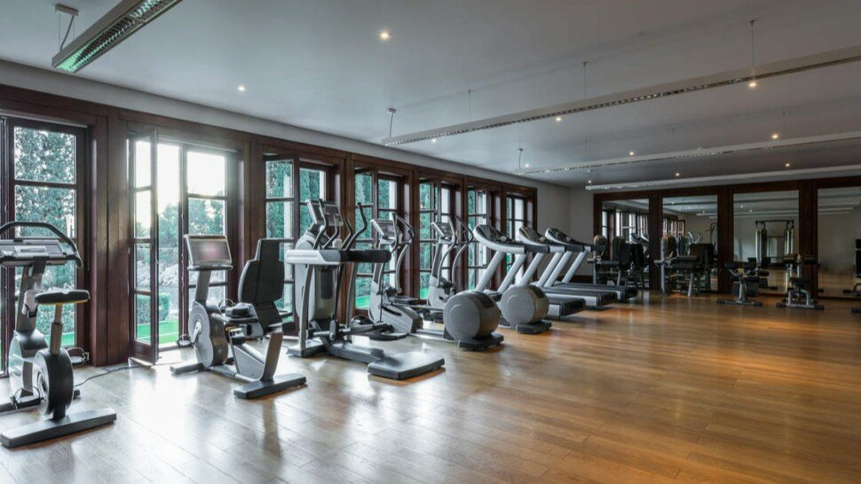

L'activité physique est un traitement : interview d'un médecin du sport
L’activité physique peut avoir non seulement un effet préventif, pour lutter contre les maladies liées à la sédentarité mais aussi un effet curatif.
Dans la dernière expertise collective de l’Inserm [1], les experts la recommandent comme traitement de première intention chez les patients atteints de dépression légère à modérée, de diabète de type 2, d’obésité ou d’artériopathie oblitérante des membres inférieurs.
En outre, la pratique régulière d'une activité physique ou sportive au moins 30 minutes par jour est un facteur majeur de l'allongement de l'espérance de vie. Les bienfaits du sport et d'un mode de vie moins sédentaire ne sont plus à démontrer par des études.


Le Docteur Roland Krzentowski, médecin du sport et de rééducation fonctionnelle, et Président de Mon Stade [2] explique au Guide Santé l’action thérapeutique de l’activité physique.
En quoi l’activité physique agit-elle comme un médicament ?
Comment l’activité physique agit-elle sur notre organisme ?
L’activité physique a-t-elle des effets préventifs ? Quels en sont les bienfaits ?

Si toute une population adoptait un mode de vie plus actif et respectait les recommandations du « bouger plus », la prévalence des maladies chroniques devrait diminuer. Il s’agit de la prévention primaire.
En prévention secondaire, l’activité physique [5] s’adresse à une population non-malade mais à risque de tomber malade. Un enfant dont l’un des parents a un diabète de type 2 a trois plus de risques d’en développer un.
S’il adopte un mode de vie actif et mange correctement, son risque peut atteindre celui de la population générale. En prévention tertiaire, l‘activité physique a une action pharmacologique et permet d’éviter les complications de la maladie.
En tant que Maison Sport Santé, quel programme proposez-vous ?
Sources
- Activité physique : Prévention et traitement des maladies chroniques. Inserm. 2019. https://www.inserm.fr/expertise-collective/activite-physique-prevention-et-traitement-maladies-chroniques/
- * Mon Stade, reconnu Maison Sport Santé par les ministères de la santé et du sport, met en place à partir d’octobre, pour une durée de cinq années, une cohorte de 2024 patients atteints de maladies chroniques pour laquelle l’activité physique est une thérapeutique non-médicamenteuse validée : diabète, cancer, maladies cardiovasculaires, obésité et HTA. L’un des objectifs sera de vérifier que le programme sur quatre mois entraîne une observance pérenne et un changement de comportement. https://monstade.fr/
- Recommandations mondiales en matière d'activité physique pour la santé. https://www.who.int/dietphysicalactivity/factsheet_recommendations/fr/
- Seniors et ostéoporose bouger pour la prévenir ! https://www.le-guide-sante.org/actualites/geriatrie/seniors-osteoporose-prevention-exercice
- Obésité et diabète de type 2 : comment éviter la survenue du diabète d’âge mur ? https://www.le-guide-sante.org/actualites/medecine/obesite-diabete-type-2
- Ménopause et traitements naturels : de la phytothérapie à la médecine douce. https://www.le-guide-sante.org/actualites/medecine/menopause-traitements-naturels-phytotherapie-medecine-douce